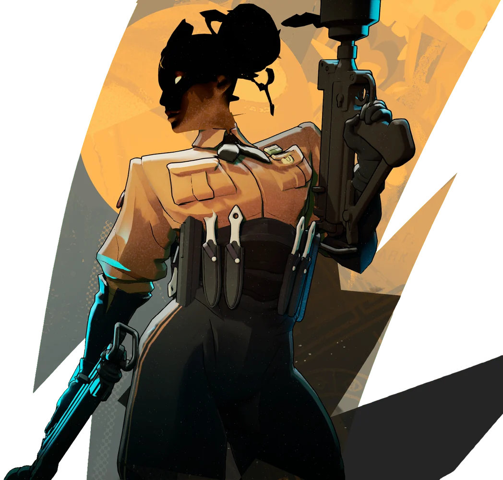
Last match · HazeVictory
K / D / A14 / 4 / 9
Souls41.2k
Rating8.9
3 clips savedLegendary350
Clips of every kill, a review of every match and stats for all 44 heroes. Free for Windows, no account, no ads.
Latest version · Windows 10 and 11 · Not affiliated with Valve

From the first second of the match to the review afterwards. Everything stays on your PC.
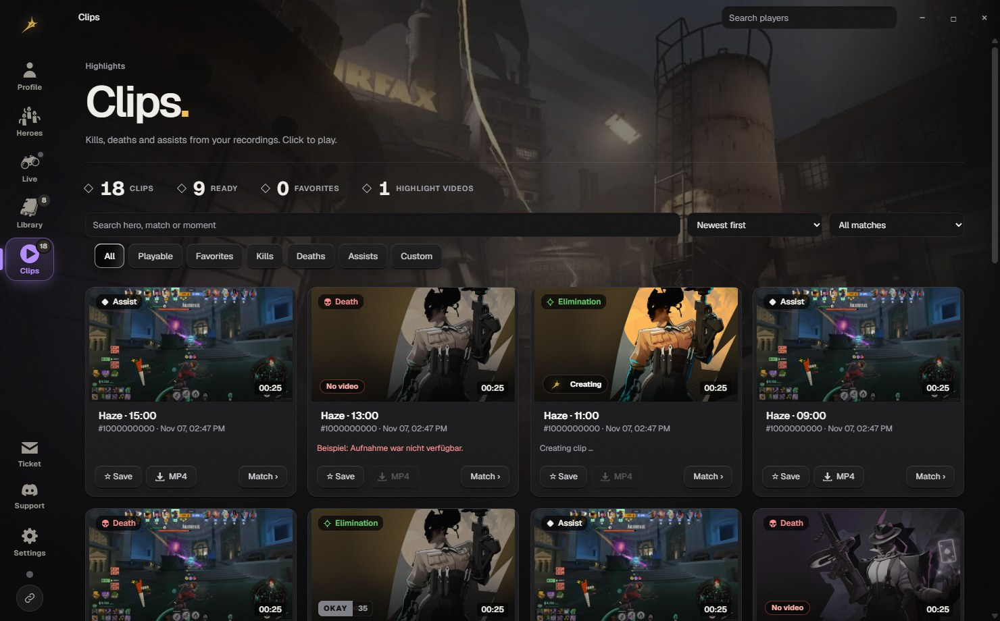
Your graphics card records in the background. Kills, multi-kills and clutches become clips by themselves, each rated from Okay to Legendary.
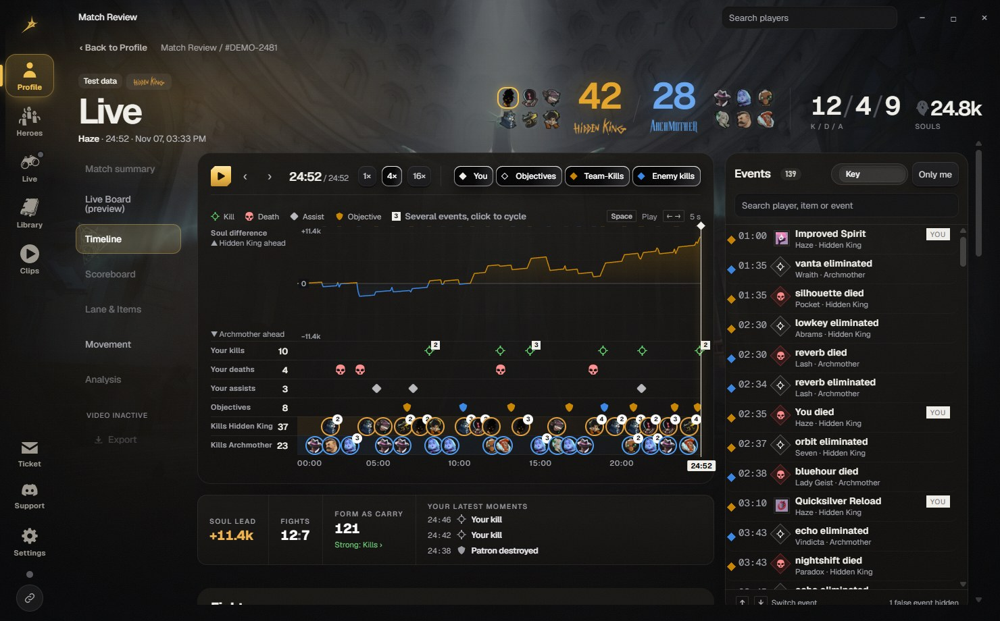
Both teams with rank and streak, the soul lead minute by minute and counter items against the enemy builds.
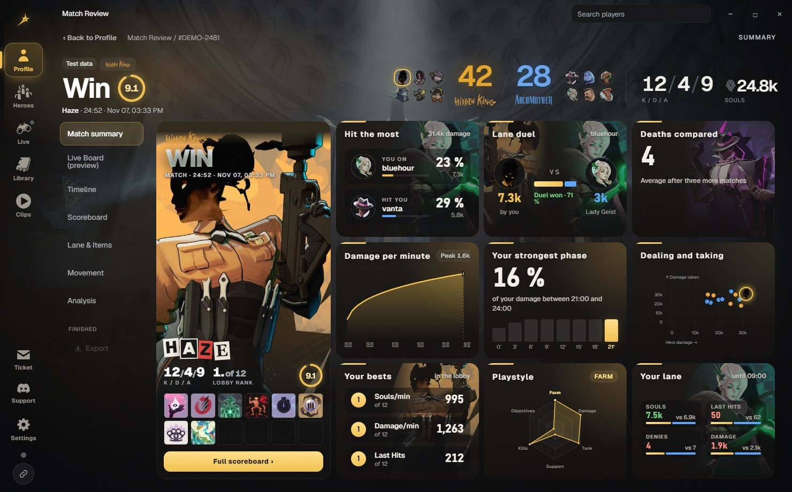
Every fight on a timeline, your lane duel and your place in the lobby for every stat, with a rating from 1 to 10.
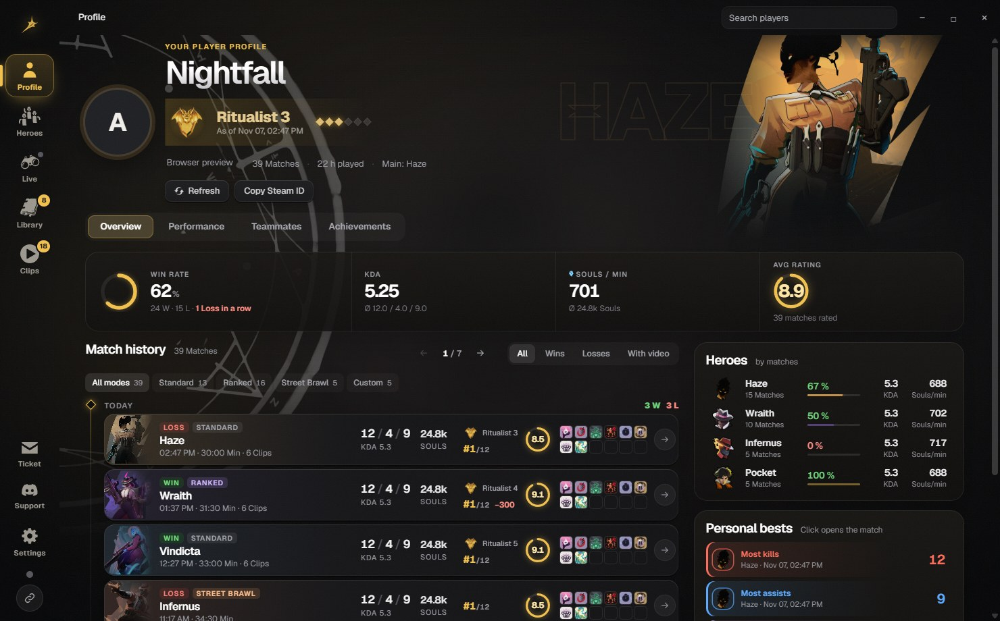
Rank, recent results, your heroes and every match with build and rating, from your own recordings and the Deadlock API.
Win rate week by week, matchups, laning, rank and patch stats, a difficulty tier list and the shop exactly like in the game.
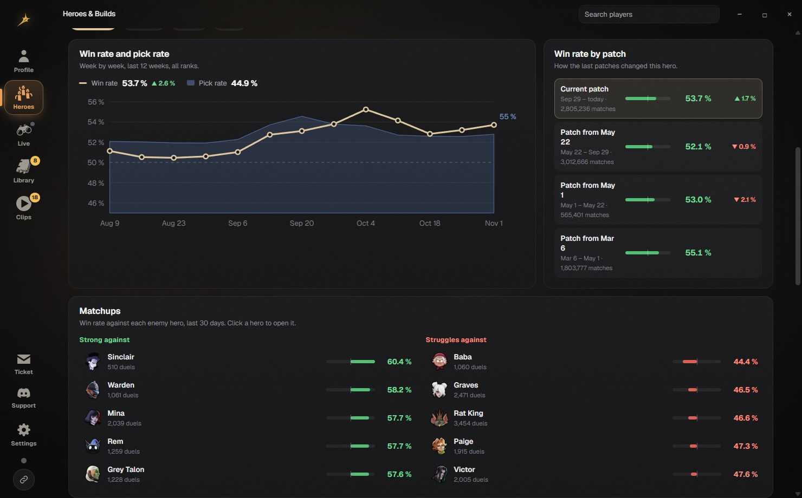
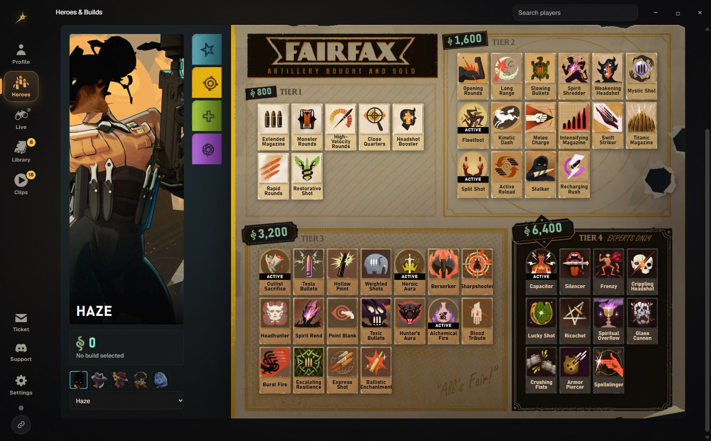
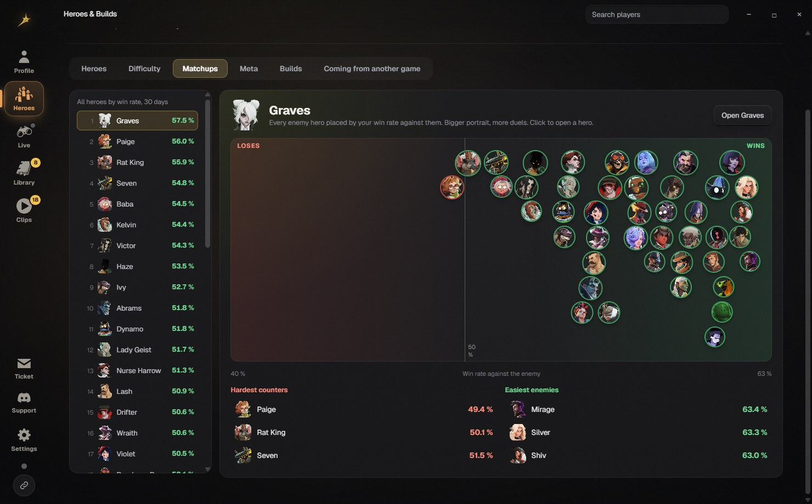
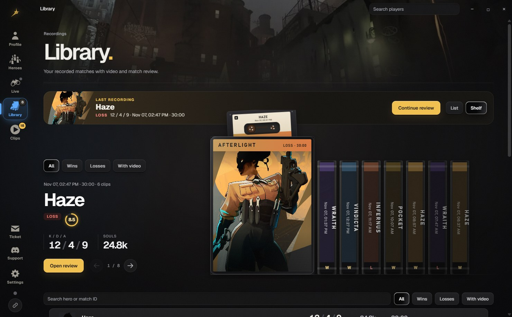
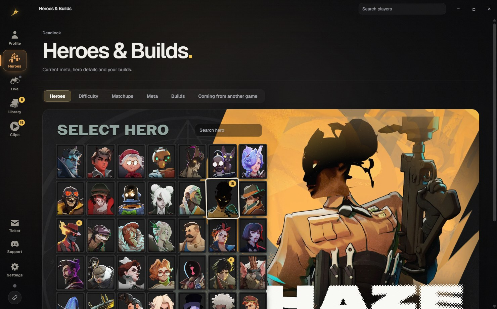
Your hero picture, K/D/A and souls live, “Won as Haze” after the match and the Hideout lines like on Steam. Write your own lines for wins, losses and every hero. Turn it on, done: no login.
Get it in the app ›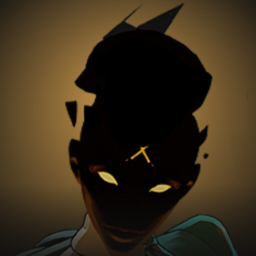
AFTERLIGHTWon as Haze · 14/4/9Easy.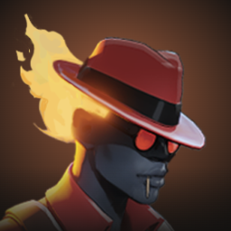
AFTERLIGHTMixing Drinks In The HideoutHanging out as Infernus0:58 elapsedThe app installs updates by itself, nothing to do for you.
Loading the latest releases …
No. During a match it only shows what Deadlock shows you too: K/D/A, souls, items and the kill feed. Damage, healing, objective damage, last hits and denies of other players only open after the match. AFTERLIGHT never writes into the game and never automates input.
It is free, without an account, ads or tracking. Your matches, recordings and clips stay on your PC in the “Afterlight Data” folder.
No. AFTERLIGHT is an independent community project and is not affiliated with, endorsed or sponsored by Valve. Deadlock is a trademark of Valve Corporation.
Windows 10 (version 2004 or newer) or Windows 11 and a graphics card with a hardware encoder (NVIDIA, AMD or Intel) for the smooth GPU recording.
On the AFTERLIGHT Discord, or straight from the app with the ticket button in the sidebar.
Only if community tracking is on: the match ID and replay access data of your own matches go to the community-run Deadlock API, so trackers can show your match. Videos, events and logins never leave your PC. You can turn it off any time.
Free for Windows 10 and 11. No account, no ads. The setup takes two clicks.